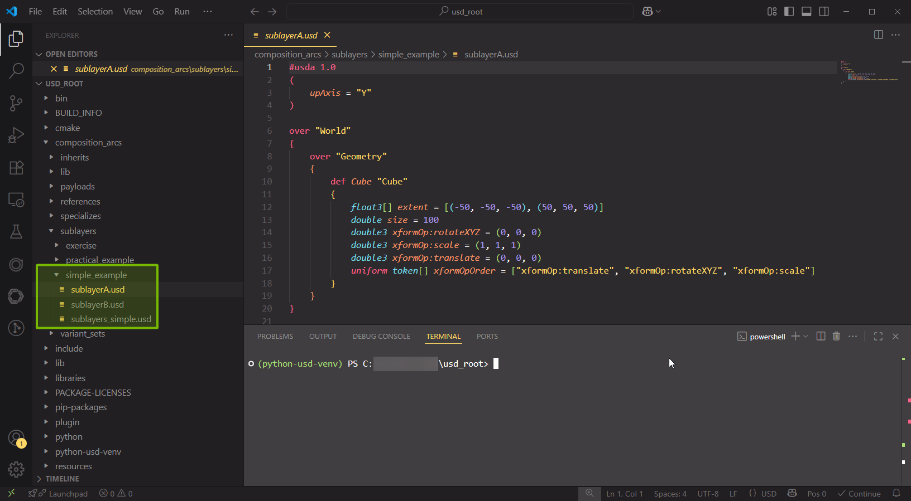
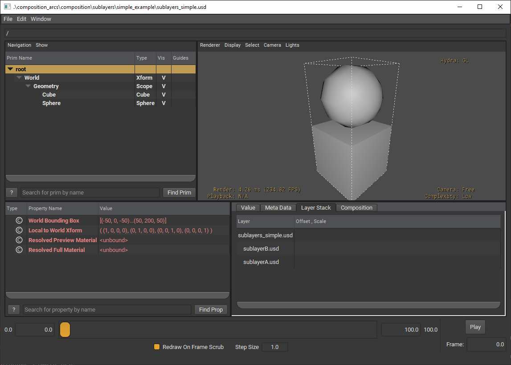
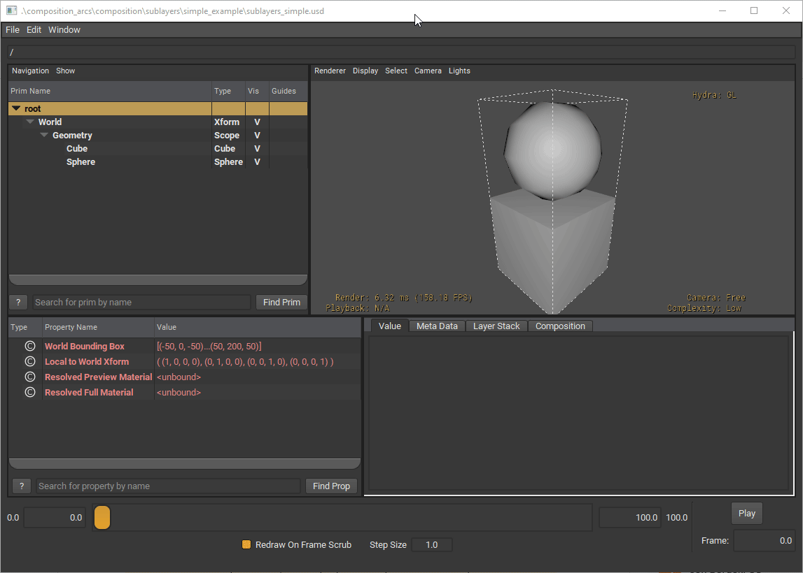
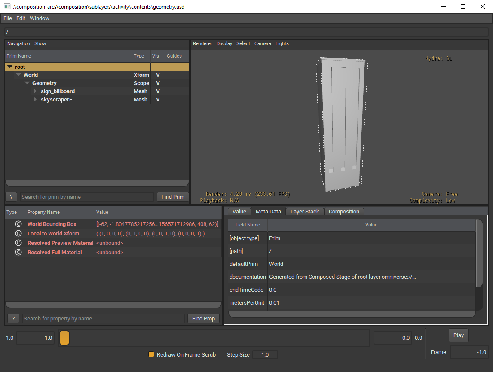
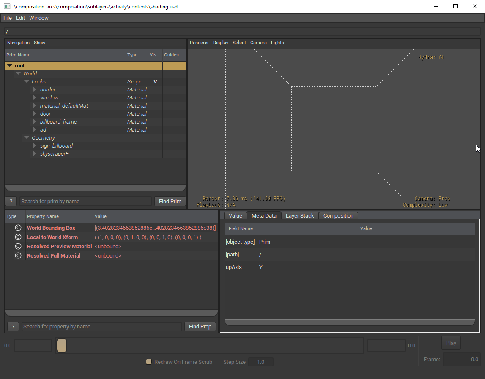
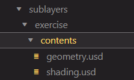
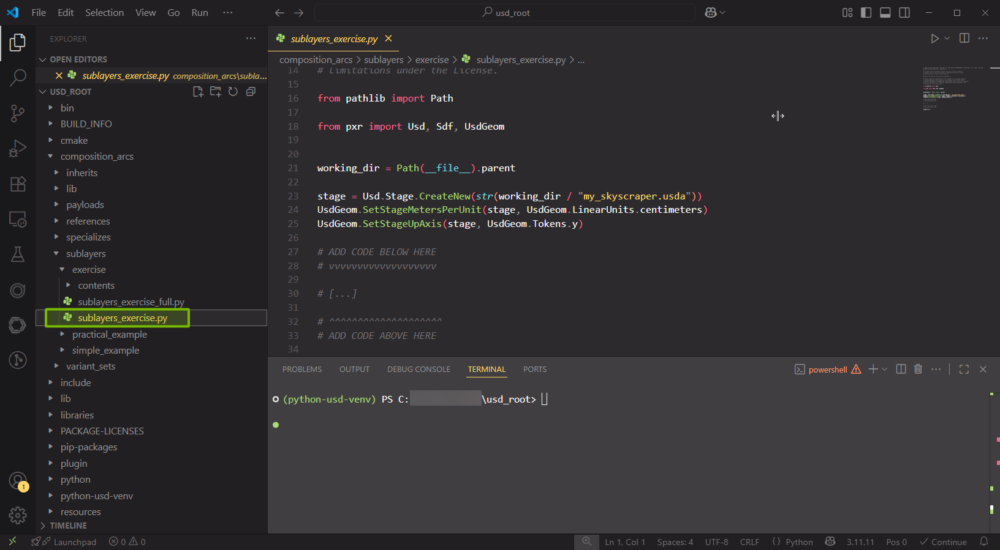
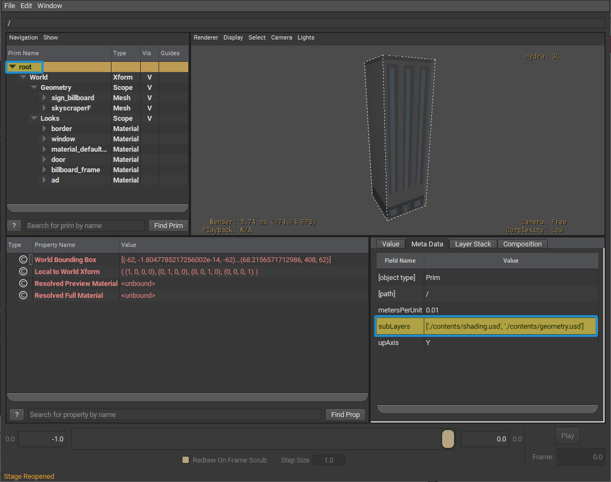

Exercise: Working with Sublayers#
Head over to Visual Studio Code and open the following file:
composition_arcs/sublayers/simple_example/sublayerA.usdWe will also be looking into
sublayerB.usdandsublayers_simple.usd. 
Looking at sublayerA.usda we can see that a Cube is being defined under Geometry which is a child of World. You might have noticed that World and Geometry both have an over specifier.
Now, let’s look at sublayerB.usda. You should notice two changes compared to sublayerA.usda. Those differences are a new def specifier for a Sphere and an over specifier for Cube.
So why are over specifiers being used here?
Over is short for “override” or “compose over”, and its purpose is to provide a neutral prim container for overriding opinions. Even when an over appears in a stronger layer than a def or class for the same primSpec it does not change the resolved specifier for that prim. In the case of sublayerB.usda, we are authoring an overriding opinion for Geometry in which we have defined a Sphere prim.
Let’s open sublayers_simple.usda. What do you notice? Any differences between the two USDA files we looked at previously?
Keep those differences in mind as we open
sublayers_simple.usdin usdview. In the terminal, run the following command:
Windows:
.\scripts\usdview.bat .\composition_arcs\sublayers\simple_example\sublayers_simple.usd
Linux:
./scripts/usdview.sh ./composition_arcs/sublayers/simple_example/sublayers_simple.usd
Here is what the file looks like in usdview:

Were your assumptions correct? Now that you can visually view the USD file, what are some observations you have that you didn’t have before?
After opening the USD file in usdview, we can inspect where prims are coming from.
Below the Viewport, select the Layer Stack tab. It will show you the layer stack for the selected prim.
Try selecting the Cube and Sphere in our stage tree and see how the layer stack changes.

Selecting Cube, we can see there is an opinion coming from both sublayerB.usda and sublayerA.usda in the layer stack. However, when we click on Sphere, sublayerB.usda is the only one in the layer stack.
Before we continue, think about the behavior we’re seeing.
Why is the sphere on top of the cube, what caused this?
What would happen if sublayerB defined a cube rather than a sphere?
How can we apply this to other industries?
Imagine we have received two layers, one containing the geometry of a building (geometry.usd) from one workstream and another containing all the materials (shading.usd). So how can we combine the two? By creating a new USD layer, we can add both geometry.usd and shading.usd as sublayers.
 
You can find these files in the composition_arcs/sublayers/exercise/contents/ folder.

To start, go to
composition_arcs/sublayers/exercise/sublayers_exercise.pyfrom Visual Studio Code’s explorer window.
We will be adding in code that adds sublayers to our root layer. This is done using Sdf.Layer API.

Let’s talk about what is going on in this script.
1# SPDX-FileCopyrightText: Copyright (c) 2025 NVIDIA CORPORATION & AFFILIATES. All rights reserved.
2# SPDX-License-Identifier: Apache-2.0
3#
4# Licensed under the Apache License, Version 2.0 (the "License");
5# you may not use this file except in compliance with the License.
6# You may obtain a copy of the License at
7#
8# http://www.apache.org/licenses/LICENSE-2.0
9#
10# Unless required by applicable law or agreed to in writing, software
11# distributed under the License is distributed on an "AS IS" BASIS,
12# WITHOUT WARRANTIES OR CONDITIONS OF ANY KIND, either express or implied.
13# See the License for the specific language governing permissions and
14# limitations under the License.
15
16from pathlib import Path
17
18from pxr import Usd, Sdf, UsdGeom
19
20
21working_dir = Path(__file__).parent
22
23stage = Usd.Stage.CreateNew(str(working_dir / "my_skyscraper.usda"))
24UsdGeom.SetStageMetersPerUnit(stage, UsdGeom.LinearUnits.centimeters)
25UsdGeom.SetStageUpAxis(stage, UsdGeom.Tokens.y)
26
27# ADD CODE BELOW HERE
28# vvvvvvvvvvvvvvvvvvv
29
30# [...]
31
32# ^^^^^^^^^^^^^^^^^^^^
33# ADD CODE ABOVE HERE
34
35stage.Save()
Currently, our script is creating a new root layer that is in centimeters with the Y-axis as our up axis. The stage gets saved into my_skyscraper.usda.
First we want to retrieve the root layer from our stage then append the sublayers. The first appended sublayer will have the highest opinion.
Add the code into the designated section inside of
sublayers_exercise.py
1root_layer: Sdf.Layer = stage.GetRootLayer()
2root_layer.subLayerPaths.append("./contents/shading.usd")
3root_layer.subLayerPaths.append("./contents/geometry.usd")
Save the file. (Ctrl + S) or File > Save
Let’s run the script. In the terminal, run the following code:
Windows:
python .\composition_arcs\sublayers\exercise\sublayers_exercise.py
Linux:
python ./composition_arcs/sublayers/exercise/sublayers_exercise.py
Now, we should see a new file: my_skyscraper.usda.
Let’s view it in usdview. In the terminal, run the following code:
Windows:
.\scripts\usdview.bat .\composition_arcs\sublayers\exercise\my_skyscraper.usda
Linux:
./scripts/usdview.sh ./composition_arcs/sublayers/exercise/my_skyscraper.usda

Here, we can see the sublayers we added by selecting root in the hierarchy window in the top left. In the Meta Data tab at the bottom right, there will be a section for subLayers.
You can look at the completed script in: composition_arcs/sublayers/exercise/sublayers_exercise_full.py